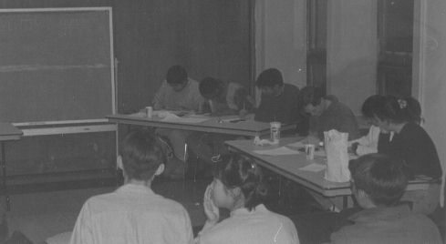

By John Wong

A team of computer science students from Columbia will participate in the International Collegiate Programming Competition, an annual conference held in the US by the Association for Computing Machinery (ACM), in Nashville, Tennessee, on March 1, 1995. The ACM is a worldwide organization to promote the interests of computer science students and professionals. Computer science students from campuses from across the country and abroad will be competing in this event.
The three man team consists of Montek Singh, a graduate student of computer science, Matthew Soscia, SEAS '96, and Tao Wu, CC '96. The team is lead by coach Drago Mir Radev, a graduate student in computer science. This team was chosen in a tryout organized by the coach in October. The result of this tryout was a formation of two three-student teams to represent Columbia. Both teams registered to participate in the regional competition held in Long Island, a region comprising New York, New Jersey, and Connecticut. The Singh-Soscia-Wu team emerged as the victor in this regional, and will therefore compete in the international competition in Nashville. There are 30 teams from 16 regions from around the world competing in Nashville. Because ACM is based in the US, most of the teams will be domestic. Columbia will do battle with highly talented teams, including the Northeast region consisting of MIT and Harvard, as well as teams from Europe and Asia.
The structure of the competition is that the teams must solve certain problems within a specified allotment of time. This five-hour event requires the student teams to solve seven problems. The team that solves the greatest number of problems wins the contest. In the event that more than one team solves the same number of problems, the team that used the least time would win. These problems are arranged in such a way that they are easy to understand, and require certain skills to implement efficient algorithms. Academic coursework that would be helpful to the team would include data structures and algorithms, computability and models of computation, and graph theory, which would provide the critical insight to the competitors. The grading of the solutions is structured so that the judges will not look at the code, but rather focus on whether the programs will work or not. Therefore, as Mr. Soscia says, "We must look to do a 'quick and dirty' job, a solution that works but is not necessarily elegant." This method of programming is unlike the software engineering course that Mr. Soscia is currently taking, where a program is "mapped out" carefully beforehand.
Consider the following: Suppose a language expert asked you to communicate with monkeys. All you get is monkey talk, and you have a general idea that monkey language is based on "context- free grammar", where sentences are made up of a hierarchy of subparts. Now you are to parse the monkey talk input, or break up the elements into sentences. Another sample problem entails an air traffic control system. You are given a set of x,y,z coordinates and vectors, and velocity of certain planes. At what locations and time would the planes be too close together? These are just a couple of the problems the team routinely solves.
Our Columbia representatives have had many occasions in which to prepare for the big contest. Coach Radev gives the team a simulated five hour sample contest to keep the team mentally prepared. Teamwork is also stressed because there is only one computer to a team. Therefore, computer time must be used efficiently to maximize output. Team members must be well adept at working and cooperating with each other.
The rewards of participating in this contest include meeting and interacting with some of the best computer science students in the world. In addition, participating in this highly prestigious contest is an inherent award in itself. There is also a monetary prize both for the winners and the school represented by them. Corporate sponsors, such as Microsoft Corporation, also cover part of the expenses of the teams.